Wall Panel Buying Guides: Choose, Inspect and Order with Confidence
Independent, practical answers for importers and distributors comparing materials, approving samples, planning orders and controlling wall panel quality.
Latest buyer guides
Newest first. Compare materials, review samples and plan your order.

Brazil PVC wall panels: reconcile a picking error without hiding the stock movement
Resolve a PVC panel mispick by matching the order, shipped cartons, replacement and return records before correcting warehouse balances.

UAE WPC wall panels: define what each mockup signature approves
Separate appearance, installation, interface and purchasing approvals for WPC mockups so one signature does not imply every project check is complete.

Uzbekistan PU stone panels: reconcile the survey datum before releasing quantities
Coordinate wall measurements, finished-floor assumptions and drawing revisions before ordering PU stone panels for an Uzbekistan interior.

Brazil PVC wall panels: isolate a suspect batch before another order leaves
Build a practical PVC panel stop-sale workflow in Brazil: isolate stock, reconcile orders, preserve evidence and document the release decision.

UAE WPC wall panels: approve a pallet substitution before loading
Control late pallet changes for UAE WPC panel orders with revised packing records, material checks, handling review and clear loading approval.

Uzbekistan PU stone panels: match the certificate to the entity and activity
Check the entity, site, scope and verification route behind a PU stone-panel supplier certificate before using it in an Uzbekistan purchasing decision.

Brazil PVC wall panels: migrate an obsolete SKU without rewriting order history
Retire a PVC panel stock code in Brazil while preserving orders, returns and product identity. Separate a replacement recommendation from equivalence.

UAE WPC wall panels: compare quotations on one declared basis
Normalize WPC panel quotations for a UAE purchase by currency, selling unit, usable coverage and delivery scope without inventing landed costs.

Uzbekistan PU stone panels: hand over a usable maintenance reserve
Plan PU stone-panel spare allocation for Uzbekistan projects with finish mapping, storage ownership, issue records and replenishment triggers.

Brazil PVC Wall Panels: Turn a Sample into an Order
A practical buyer workflow for converting an approved PVC wall-panel sample into a traceable purchase specification for Brazil.

SPC Sample Boards in Brazil: Avoid Misleading Displays
Build a Brazilian SPC flooring display that represents the supplied range without confusing colour samples with technical evidence.

WPC TV Walls in Brazil: Plan Services Before Panels
Coordinate a Brazilian WPC media wall around television supports, wiring access and ventilation before ordering decorative panels.

UV Marble Counter Fronts in Brazil: Detail the Edges
Specify decorative UV marble-look sheets for Brazilian retail counter fronts, including edges, cleaning exposure and replaceable sections.

PU Stone Samples in Brazil: Evaluate Relief and Finish
Run a traceable sample-loan process for PU stone-look panels so Brazilian buyers approve the correct finish and return usable evidence.

PVC Panels in Chile: Plan Warehouse Storage First
Prepare a Chilean distributor warehouse for long PVC wall panels with a documented unloading, storage, identification and picking plan.

WPC Restaurant Walls in Chile: Define Cleaning Zones
Help Chilean restaurant buyers distinguish decorative dining walls from splash, grease and service areas before choosing WPC cladding.

SPC Floors in Chile: Plan a Phased Office Refit
Coordinate SPC flooring orders for an occupied Chilean office without confusing purchasing phases with installation approval.

Chile Lobby Wall Sheets: Survey Before Cutting
Prepare an elevator-lobby survey for decorative marble-look wall sheets in Chile, keeping movement, access and equipment clearances separate.

PU Stone Retail Walls in Chile: Plan Display Changes
Coordinate decorative PU stone-look walls with frequently changing retail displays in Chile without assuming the cladding can carry fixtures.

PVC Panels to Peru: Prepare for LCL Unpacking
Plan identification and receiving for a consolidated PVC wall-panel shipment to Peru without treating sea freight as the entire delivery.

SPC Bedroom Floors in Peru: Ask the Acoustic Questions
Help Peruvian apartment buyers distinguish SPC flooring appearance, underlay choices and product-specific evidence about sound transmission.

WPC Wall Kits for Peru: Pack by Store, Not Only SKU
Organise WPC wall-panel orders for several Peruvian retail branches with project kits, accessory reconciliation and clear receiving records.

Peru Vanity Walls: Define the Marble-Look Sheet Scope
Specify a decorative vanity wall in Peru while keeping plumbing leaks, waterproofing and sheet maintenance as separate responsibilities.

PU Stone Panels to Peru: Build the Product Dossier
Prepare a factual PU stone-look panel description for a Peruvian broker without guessing tariff codes from the product’s appearance.

PVC Panels in Colombia: Build a Dealer Demonstration
Create a useful Colombian dealer demonstration that separates product handling, approved installation guidance and sales claims.

SPC Store Entrances in Colombia: Detail the Mat Edge
Coordinate entrance mats, floor levels and SPC transitions for Colombian retail projects before placing the flooring order.

WPC Catalogs in Colombia: Review Claims Before Launch
Build a Colombian distributor catalog that links WPC product names, photographs and technical claims to verifiable records.

Colombia Reception Walls: Coordinate Sheets and Signs
Plan marble-look reception wall sheets around signage, wiring and supports before cutting material for a Colombian office.

PU Stone Parcels in Colombia: Protect Decorative Relief
Design a small-order parcel review for PU stone-look panels in Colombia with attention to relief faces, edges and receiving evidence.

SPC Flooring Samples in Iraq: A Retailer Loan System
Give each loan sample an identity, record its condition and return date, and separate appearance approval from technical suitability. A sample loan should

PVC Ceilings in Iraq: Planning Service Corridors
Map the maintenance tasks before choosing panel lengths and joint positions. Obtain a ceiling-specific system detail, coordinate service support independen

UV Marble Sheets in Iraq: Reception Desk Joint Layout
Draw each desk face separately, identify exposed edges and establish which surfaces the proposed sheet is intended to cover. Do not assume wall-sheet suita

PU Stone Panels in Iraq: Can an Arch Be Detailed?
Treat the arch as a fabrication detail requiring supplier and installer review. Confirm cutting, edges and fixing on a representative mockup; never assume

WPC Walls in Saudi Arabia: Prayer-Room Transitions
Review the wall base with the flooring, cleaning and facilities teams before ordering. Confirm the exact panel’s intended use and agree a detail that avoid

SPC Flooring in Saudi Hotels: Room Handover Planning
Define the conditions for releasing each room, the responsible signatories and the product information that housekeeping needs. Keep installation completio

PVC Ceilings in Saudi Arabia: Inspection Hatch Orders
Treat the hatch-to-panel junction as a defined purchasing interface. Confirm dimensions, support, opening clearance and finishing responsibilities before a

UV Marble Sheets in Saudi Lift Lobbies: Joint Planning
Map existing movement joints and changes of substrate before laying out the sheets. Ask the responsible designer for the required junction details, then co

WPC Exhibition Walls in the UAE: Planning Reuse
Define the intended number of moves, fixing method and storage arrangement, then request supplier guidance and test a representative assembly. Do not promi

SPC Flooring in UAE Tenant Fitouts: Approval Pack
Build the approval pack around the actual tenant space and product model. Track comments and revisions, and release procurement only when the required deci

PU Stone Walls in the UAE: Changing the Lighting
Document the original lighting and finish, compare the replacement light on a small area and investigate the cause of the changed appearance. Do not diagno

PVC Wall Panels in the UAE: Bilingual Tender Checks
Use one controlled item register with matching references in both languages. Resolve ambiguous terms against drawings and supplier data, then compare quota

PVC Ceiling Panels in Oman: Warehouse Storage Plan
Confirm storage limits for the exact product, inspect the warehouse conditions and preserve carton identity. Protect the material without inventing univers

WPC Walls for Oman Boutique Hotels: Material Schedule
Create a location-based material register linking each wall to a verified product reference, finish sample and detail. Use it to coordinate quantities and

SPC Flooring in Oman: Splitting One Order Across Sites
Allocate cartons and accessories against named site requirements before dispatch, preserve product identity and record every transfer. Do not treat similar

PU Stone Walls in Oman: Coordinating Sign Fixings
Coordinate the sign support, cable route and panel layout before purchase. Do not assume decorative PU cladding can support signage loads; have the respons

UV Marble Sheets in Qatar: Lift Access Before Ordering
Check the complete delivery route using the actual packed dimensions and weight, then agree handling with the building operator and competent team. Do not

PVC Ceilings in Qatar: Retail Night-Shift Handover
Plan each work zone, its materials and its acceptance checks before the shift. Keep reopening decisions with the responsible project team and do not assume

WPC Wall Panels in Qatar: A Digital Sample Register
Give each physical sample a stable reference and record its status, related product documents and approval context. Keep photographs as supporting informat

SPC Flooring in Qatar: Furniture Delivery Protection
Coordinate furniture movement with the actual flooring care and installation guidance. Select compatible protection and suitable handling methods, then ins

Build a useful PVC supplier shortlist in Uzbekistan
A PVC wall panel supplier shortlist in Uzbekistan should explain why an offer remains under consideration, not merely rank photographs and prices.

WPC wall-end returns: an Uzbekistan order checklist
Plan WPC wall-panel end returns for Uzbekistan orders: identify exposed edges, coordinate trims and record the details needed for a quotation.

SPC flooring storage racks for Uzbekistan showrooms
SPC flooring storage racks in Uzbekistan should be chosen around the delivered cartons, not a photograph of a tidy warehouse.

Pre-cut or full UV sheets for Uzbekistan projects?
Pre-cut UV marble sheets for Uzbekistan projects can appear to simplify installation, but cutting before final site measurement transfers decisions earlier in the order.

Return unused PU panel cartons to stock carefully
Unused PU stone panel cartons in Uzbekistan should not return to saleable stock simply because a project says they were never installed.

PVC sales units: cartons, pieces and coverage
Align PVC wall-panel cartons, pieces and usable coverage for Uzbekistan orders so importers, dealers and installers compare the same quantities.

Choosing entrance mats for SPC flooring in Uzbekistan
SPC flooring entrance mats in Uzbekistan should be selected as part of the care plan, not bought only after the floor is installed.

LED channels beside WPC walls: buyer coordination
Coordinate WPC walls and separate LED channels in Uzbekistan: check access, fixing responsibilities and lighting details before ordering.

UV washbasin backsplashes: plan the penetrations
Plan UV marble washbasin backsplashes in Uzbekistan: document tap openings, adjoining surfaces and the installation details that need review.

Test the cleaning routine for PU relief walls
A PU stone panels cleaning trial in Uzbekistan helps a buyer compare daily upkeep before committing to a deeply textured feature wall.

Coordinate wall finish codes across Uzbekistan sites
Wall finish codes for Uzbekistan projects become important when several branches use similar PVC, WPC and decorative-sheet colours.

Build a PVC cutting map before buying mixed lengths
Build a PVC wall-panel cutting map for Uzbekistan projects: compare mixed lengths, room dimensions and usable offcuts before requesting a quote.

Keep SPC click demonstrations honest and usable
Maintain SPC click demonstration samples in Uzbekistan: identify worn joints, keep sample records and distinguish demonstrations from new planks.

WPC sample rear-face identification in Uzbekistan
Identify the rear face of WPC wall-panel samples in Uzbekistan: compare profiles, labels and product codes before confirming the selected model.

Check UV wall reflections near office screens
Review UV marble wall reflections near office screens in Uzbekistan before ordering a glossy finish: assess lighting, viewing angles and samples.

Review PU stone-look panels in Uzbekistan shop windows
PU stone panels in shop windows in Uzbekistan are viewed through glass, from changing angles and under conditions that differ from an interior sample desk.

Review PVC brochure claims before dealer circulation
Review PVC wall-panel brochure claims for Uzbekistan dealers: check wording against model-specific evidence before copying or translating a catalog.

Triage an SPC flooring complaint without guessing
SPC flooring complaint triage in Uzbekistan should begin with a clear record, not an immediate verdict about the product or installer.

Plan for a discontinued WPC décor in Uzbekistan
A discontinued WPC décor in Uzbekistan can leave a distributor with active samples, open quotes and remaining stock that no longer share the same commercial status.

Pack UV samples for a useful Uzbekistan review
Pack UV marble sheet samples for Uzbekistan buyers: protect edges and visible surfaces, identify each sample and document what needs evaluation.

PVC wall panels in Brazil: prepare product data before selling online
Build a clear Portuguese PVC wall-panel listing for Brazil: selling units, usable coverage, model-specific evidence and accurate product images.

PU stone panels for UAE exhibitions: plan the display after the event
Plan a PU stone-look exhibition display in the UAE with venue checks, a trial assembly, dismantling responsibilities and realistic reuse expectations.

WPC wall-panel orders for Uzbekistan: control changes before dispatch
Keep an Uzbekistan WPC wall-panel order consistent when finishes, quantities or drawings change: revision records, approvals and dispatch checks.

SPC flooring in Brazil: hand over a usable retail cleaning plan
Plan SPC flooring maintenance for Brazilian shops: approved cleaning products, pedestrian access, responsibilities and practical handover records.

PVC wall panels in Oman: plan phased deliveries for a working site
Plan phased PVC wall-panel deliveries in Oman with room allocations, complete trim sets, receiving capacity and a clear release decision for each load.

WPC wall panels in Uzbekistan: approve the cleaning method with the sample
Build a practical WPC wall-panel care trial for Uzbekistan interiors, recording exact finishes, approved methods and the limits of sample observations.

PVC wall panels or wallpaper for a renovation in Brazil?
Compare PVC wall panels and wallpaper for Brazilian renovations: preparation, finished depth, replacement and complete installed-cost quotations.

WPC wall panels vs solid wood for UAE interiors: compare the complete specification
Compare WPC wall panels with solid timber for UAE interiors using appearance samples, movement details, repair plans and product-specific evidence.

PU stone-look panels or gypsum relief for an Uzbekistan feature wall?
Compare PU stone-look panels and decorative gypsum relief for Uzbekistan projects: finish scope, support, samples, repairs and delivered quotations.

PVC bathroom ceilings in Brazil: plan ventilation before ordering
Buying PVC ceiling panels for a Brazilian bathroom renovation? Coordinate exhaust grilles, access and trade responsibilities before ordering materials.

WPC wall panels in the UAE: how to check recycled-content claims
Review recycled-content claims for UAE WPC wall-panel orders: product scope, calculation basis, independent evidence and quotation wording.

PU stone panels in Uzbekistan: approve the wall under its intended lighting
Plan a lighting mockup before ordering PU stone-look panels for Uzbekistan. Check relief, panel joints, viewing positions and approval records.

PVC wall panels in Brazil: coordinate sockets before ordering
Plan socket positions, finished wall depth and faceplate fit before ordering PVC wall panels for Brazil. Prepare a coordinated buyer and installer brief.

WPC panels for Saudi ceilings: what needs approval?
Considering WPC wall panels for a Saudi ceiling? Check intended use, support design, services and project approvals before placing an order.

PU stone panels in Uzbekistan: assess old wallpaper first
Planning PU stone panels over wallpaper in Uzbekistan? Separate substrate preparation, sample approval and panel supply before confirming a renovation order.

SPC flooring in Uzbekistan: underfloor heating approval
Buying SPC flooring for a heated floor in Uzbekistan? Prepare a compatibility brief covering the heating system, floor assembly and installer sign-off.

PVC shower panels in Brazil: order joints and accessories
Prepare a complete PVC shower-panel enquiry for Brazil: approved joints, corners, penetrations, compatible sealants and installation responsibilities.

SPC flooring in Iraq: plan replacement planks before buying
Build a replacement-plank plan for Iraq SPC flooring orders: compatible product identifiers, spare stock, repair scope and handover records.

SPC flooring in Brazil: compare wear layer, core and total thickness
Compare SPC flooring quotations for Brazil without confusing wear layer, rigid core and attached backing. Build a clear specification before ordering.

SPC flooring for Chile: plan doorway transitions before ordering
Plan SPC doorway profiles, floor-height changes and movement joints for Chilean interior projects before finalizing the flooring order.

SPC flooring for stairs in Peru: what to confirm before buying
Separate stair suitability from ordinary SPC floor selection. Review nosings, fixing details and sample approval for projects in Peru.

SPC flooring for Colombian offices: check chair and rolling-load use
Review wheeled chairs, protection mats and intended use before specifying SPC flooring for an office project in Colombia.

SPC flooring in Iraq: coordinate fixed cabinets and kitchen islands
Coordinate fixed furniture, installation sequence and floating-floor movement before ordering SPC for an interior project in Iraq.

SPC flooring for Saudi shopfronts: review sun exposure before ordering
Assess glazed shopfronts, operating conditions and shading before specifying SPC flooring for a Saudi Arabian retail interior.

WPC wall panels in the UAE: how to review an acoustic claim
Check the tested assembly, mounting and acoustic metric before accepting a WPC wall-panel claim for a UAE interior project.

WPC wall panels for Qatar retail fit-outs: plan removal as well as installation
Define removal, substrate repair and panel reuse expectations before ordering WPC wall panels for a leased retail space in Qatar.

PVC wall panels in Brazil: build a clear warranty and claim file
Clarify warranty scope, batch evidence and claim responsibilities before importing PVC wall panels for resale in Brazil.

PVC wall panels in Chile: estimate adhesive quantities without guessing
Build an adhesive allowance from an approved installation method and representative trial, not a generic tubes-per-panel assumption.

UV marble sheets for Peru: approve bookmatch layouts before ordering
Check whether a UV marble-sheet design supports a mirrored layout, then approve exact sheet positions and pattern references for Peru projects.

UV marble sheets in Colombia: plan unloading and internal handling
Check delivery access, sheet dimensions, handling equipment and protected staging before ordering UV marble sheets for a Colombian project.

PU stone panels in Uzbekistan: agree repair materials before handover
Clarify repairable damage, finish matching and replacement options before handing over a PU stone-panel interior in Uzbekistan.

WPC wall panels in Uzbekistan: reserve batches for phased projects
Separate available stock from project-reserved WPC panels, and record batch allocation before phased deliveries to Uzbekistan projects.

PVC ceiling panels for Iraq: compare lengths and packing before ordering
Choose PVC ceiling-panel lengths using room layouts, cutting schedules and delivery constraints, not square-metre price alone.

PVC wall panels for Colombia: reconcile the invoice and packing list before shipment
Check PVC panel descriptions, units, quantities and package references before importing into Colombia. Prepare a consistent document pack for your broker.

WPC wall panels in Saudi Arabia: what to check when a project asks for an FSC claim
Review the exact WPC product, supplier scope and sales-document claim for a Saudi project. Avoid confusing a wood-look finish with certified sourcing.

PU stone panels for Uzbekistan: review cargo insurance across the whole route
Ask practical insurance questions before shipping PU stone panels to Uzbekistan: route, handling, exclusions, insured parties and damage reporting.

PVC wall panel offcuts in Brazil: confirm a recycling route before promising one
Plan PVC panel offcut collection in Brazil by checking material acceptance, separating waste streams and documenting the actual destination—not just recyclability.

WPC wall panels for UAE projects: what to check when an EPD is requested
Review WPC environmental product declarations for UAE procurement by checking product scope, validity, units and assessment boundaries before approval.

PU stone panels in Uzbekistan: protect partial orders after opening the original carton
Organise split-carton PU panel orders in Uzbekistan with traceable picking, protected remaining stock and packaging suited to the next delivery.

PVC ceiling panels in Brazil: coordinate lighting before cutting or ordering
Plan PVC ceiling panels for Brazil with a coordinated light layout, support responsibilities, cutout details and maintenance access before placing the order.

WPC wall panels for Saudi hotel corridors: separate decoration from impact protection
Specify WPC hotel corridor finishes in Saudi Arabia with a traffic review, separate impact-protection requirements and coordinated maintenance details.

PU stone panels in Uzbekistan: approve a multi-panel seam mockup, not one small sample
Review PU stone panel joints for Uzbekistan projects with a multi-panel layout, actual lighting, confirmed finishing method and a documented approval record.

PVC wall panels for Colombian distributors: build a manageable first assortment
Plan a first PVC wall panel range for Colombia using customer enquiries, distinct product codes, matching trims and a measured reorder review—not guessed demand.

WPC versus MDF wall panels in UAE fit-outs: approve the substitution, not just the colour
Review WPC and MDF wall panel alternatives for UAE projects through construction, installation, performance evidence and written approval—not appearance alone.

PU stone panels for Uzbekistan: calculate shipping volume from the packed goods
Prepare PU stone panel freight enquiries for Uzbekistan with outer carton dimensions, package counts, gross weight and confirmed handling assumptions.

PVC wall panels for Peru: compare what the quotation actually includes
Compare PVC wall panel quotations for Peru using a shared scope: panel identity, useful coverage, trims, installation exclusions and delivery boundaries.

WPC wall panels in UAE offices: plan the glass-partition junction before ordering
Coordinate WPC wall panels with glass partitions in UAE fit-outs: finished depth, edge trim, joint responsibility, material compatibility and replacement access.

PU stone-effect walls for Uzbekistan showrooms: plan for changing displays
Plan future shelf and display changes before ordering PU stone-effect panels for Uzbekistan showrooms: support zones, finish continuity and spare-piece records.

PVC wall panels for Brazilian apartments: will the ordered length reach the room?
Check packed PVC panel dimensions against apartment delivery routes in Brazil before ordering: elevator access, corridor turns, storage and delivery scope.

Curved WPC reception walls in Saudi Arabia: what must a mockup prove?
Check a curved reception wall proposal before ordering WPC panels for Saudi projects: geometry, product construction, joints, fixings and mockup approval.

PU stone wall panels in Uzbekistan: plan door reveals before ordering
Plan PU stone-look cladding at door openings in Uzbekistan: check finish depth, frame clearance, return pieces and the accessory schedule before ordering.

PVC wall panels for Brazil: prepare a Portuguese installation pack
Prepare Portuguese installation documents for Brazilian PVC panel distributors: match product codes, clarify joint details and verify the installer handover.

WPC wall panels for Iraqi shop interiors: what spare materials should you order?
Plan WPC spare panels and trims for Iraqi shop fit-outs: distinguish cutting waste from maintenance stock, test replacement access and record stored materials.

PU stone panels in Uzbekistan: keep showroom branches selling the same specification
Coordinate PU stone panel samples across Uzbek showroom branches with one reference register, controlled sample kits and clear order handover records.

Does SPC flooring with an attached pad need extra underlay?
Before adding underlay beneath backed SPC flooring, check the exact flooring assembly, moisture provisions, acoustic evidence and written installation approval.

How do you preserve service access behind decorative wall panels?
Plan access hatches before ordering decorative wall panels: map service points, confirm clear openings and finish compatibility, then test the completed door.

PU stone panel outside corners: molded pieces or a mitred detail?
Compare molded corner pieces and mitred details before ordering PU stone-look panels. Measure returns separately and approve a full corner mock-up.

SPC flooring for Brazil: how to compare wholesale quotes
Compare SPC flooring quotes for Brazil using the same construction, packing, delivery scope and destination costs before choosing a wholesale supplier.

Choosing an SPC flooring supplier for Iraq: a buyer checklist
Shortlist SPC flooring suppliers for Iraq using samples, identifiable product evidence, destination-document checks and a clear order handover.

PVC wall panels for Chile: planning a first wholesale order
Build a focused first PVC wall panel order for Chile with suitable finishes, matching trims, clear Spanish product information and a receiving plan.

WPC wall panels for Saudi hotels: what to put in the purchase brief
Prepare a Saudi hotel WPC wall panel purchase brief covering room zones, technical approvals, Saber review, mock-ups and staged delivery responsibilities.

SPC flooring in Uzbekistan: build a repeat-order range
Plan SPC flooring replenishment for Uzbekistan with stable product references, measured stock demand, inland delivery milestones and batch controls.

PU stone wall panels for the UAE: choose a useful sample range
Choose PU stone-look panel samples for UAE showrooms and project buyers with meaningful finish differences, full-joint review and a clear quotation brief.

Can PVC wall panels cover a damp wall?
Before buying PVC cladding for a damp wall, separate moisture repairs from decorative work and agree on substrate acceptance and installation responsibilities.

Will your wall panel adhesive still be usable when the project starts?
Plan adhesive expiry, storage and installation dates before importing wall panel accessories. Check exact product documents instead of assuming a universal shelf life.

What should a wall panel carton label let a distributor trace?
Build a practical link between wall panel cartons, batches, orders and customer deliveries. Avoid losing product identity when pallets are split or relabelled.

Do PVC wall panels need expansion gaps?
Coordinate PVC wall panel expansion gaps, edge trims and room conditions before ordering. A buyer checklist without unsupported universal dimensions.

How should buyers approve the grain direction of decorative wall sheets?
Check grain direction, pattern repeats, seams and cut layouts before ordering decorative wall sheets. Do not assume matching colours create matching veins.

What should importers record when wall panel cartons arrive damaged?
Build a clear receiving record for damaged wall panel cartons: shipment identity, packaging, affected pieces and timely notification to the right parties.

When should buyers remove protective film from PVC panels?
Plan protective-film inspection, shaded storage and removal approval before distributing decorative PVC panels. Avoid confusing film with the finished surface.

Which adhesive documents should a wall panel buyer request?
Separate adhesive compatibility, installation instructions and safety information before approving decorative wall panels for a project.

Can shelves and mirrors be fixed to decorative wall panels?
Plan accessory supports, backing and service checks before ordering decorative PVC or WPC wall panels for retail and hospitality interiors.

SPC flooring subfloor flatness: what to check before ordering
Separate flatness from moisture and level. Build a site acceptance record before ordering SPC flooring for renovation or distribution projects.

Can a cleaning chemical damage a decorative PVC wall panel?
Check the exact decorative finish, cleaner and cleaning method before specifying PVC wall panels for hospitality, retail or managed interiors.

What should wall panel importers check about wood packaging?
Separate the panel material from pallets, crates and dunnage. Ask the right wood-packaging questions before approving an international shipment.

Can PU stone-look panels go over a painted masonry wall?
Before specifying PU stone-look panels over painted masonry, check wall moisture, paint adhesion and the exact fixing system with a small site mock-up.

Will an indoor WPC panel keep its look beside a sunlit shop window?
A Gulf showroom buyer guide to sunlight exposure, model-specific evidence and mock-ups for indoor WPC decorative panels placed near glazing.

What should an Uzbekistan wall-panel buyer specify in an FCA order?
For Uzbekistan importers arranging multimodal freight, define the exact FCA handover point, carrier and documents before ordering wall panels.

Why does a wall panel sample look different in the showroom?
A practical colour-approval checklist for South American wall panel distributors: compare physical samples in the intended lighting and record one signed reference.

Can decorative wall panels sit beside an AC diffuser in a Gulf fit-out?
For Gulf retail and hospitality fit-outs, assess air-conditioning, concealed moisture and service access before placing decorative wall panels near diffusers.

Can SPC flooring be laid over a new concrete slab in Uzbekistan?
Before installing SPC flooring over a concrete slab in Uzbekistan, document moisture, flatness, room conditions and the exact product installation limits.
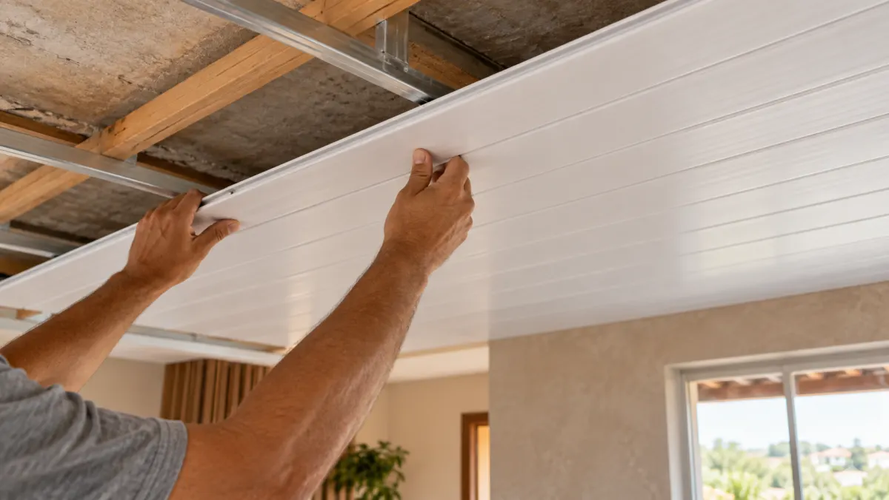
Importing PVC ceiling panels to Brazil: what should buyers verify first?
Before importing PVC ceiling panels to Brazil, align the exact profile, NCM classification, administrative treatment, shipment documents and sample approval.
Can decorative wall panels hide condensation in a Gulf hotel?
For air-conditioned Gulf hotels, review condensation behind decorative PVC or WPC wall panels before approving a finish, substrate, fixing method or sample.
Wall panels delivered to Uzbekistan in winter: what happens before installation?
A winter-arrival checklist for Uzbekistan wall panel importers: inspect packaging, moisture, temperature transition, samples and substrate before installation.
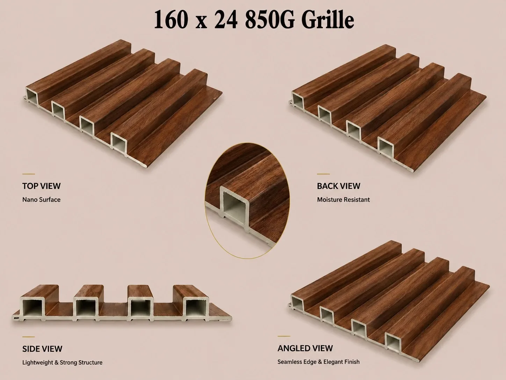
Are PVC wall panels safe for indoor use?
Assess indoor PVC wall panel safety through exact-SKU emissions, fire evidence, installation products and intended use before approving a project or distribution range.
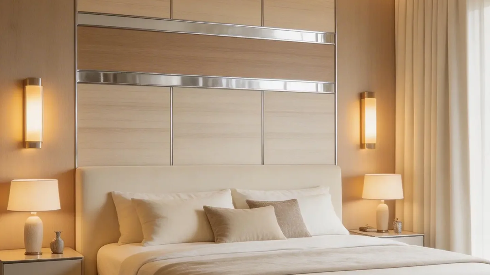
Can PVC wall panels be painted?
Find out when painting PVC wall panels is feasible, how to check face-film adhesion, and why buyers should approve a painted sample before a bulk order.
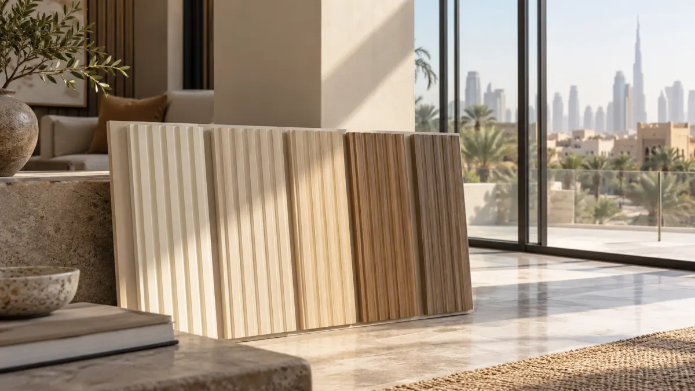
Are PVC wall panels heat resistant near a cooker?
Plan PVC wall panels near ovens, cookers and hot lights by checking heat exposure, cleaning, fire requirements and the exact panel installation instructions.
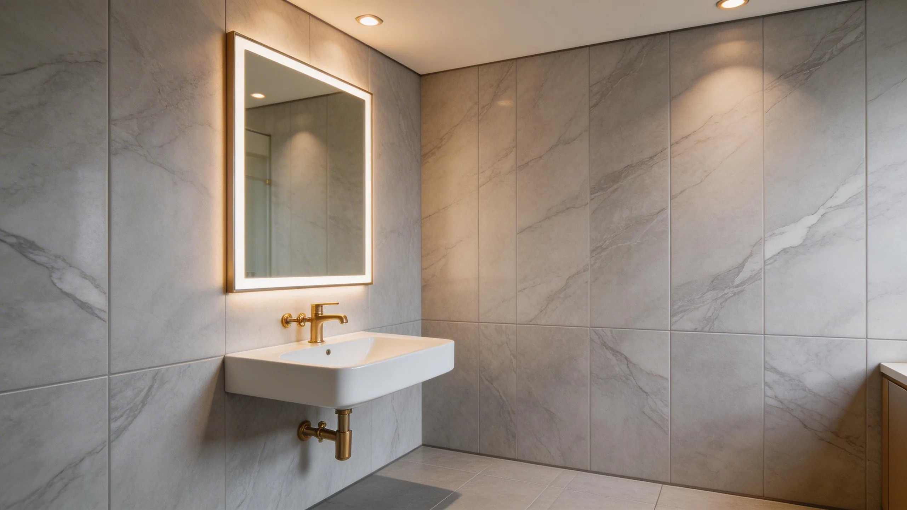
Can PVC wall panels be used in a shower?
Can PVC wall panels go inside a shower? Check waterproofing behind the panels, joints, penetrations, cleaning and installation approval before specifying.
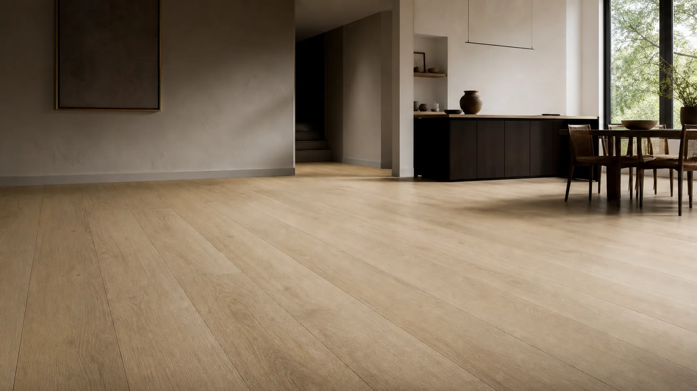
Can PVC wall panels be used on a floor?
Why PVC wall panels should not be sold as flooring without floor-specific evidence, and how to select a suitable SPC or resilient floor product instead.
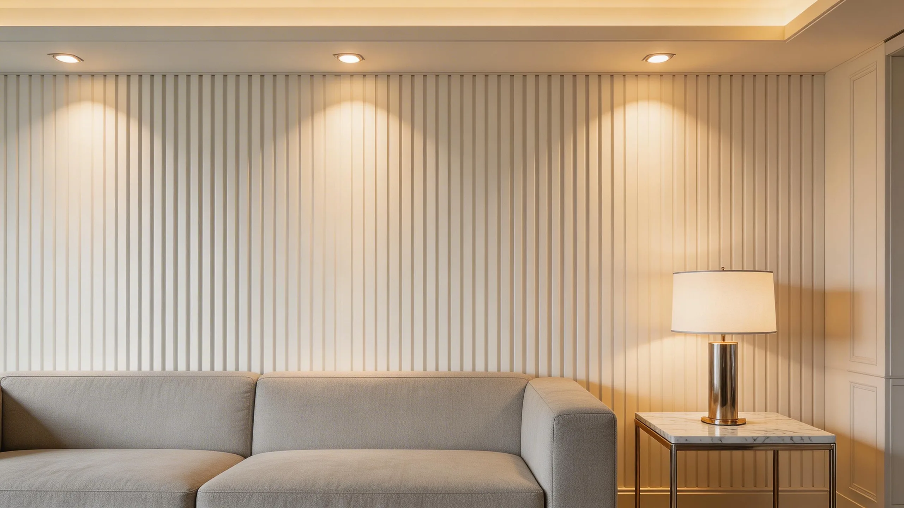
How do you cut PVC wall panels without damaging the finish?
Plan clean PVC wall panel cuts around outlets, corners and pipes with the right sample, support, blade trial and safe finishing method.
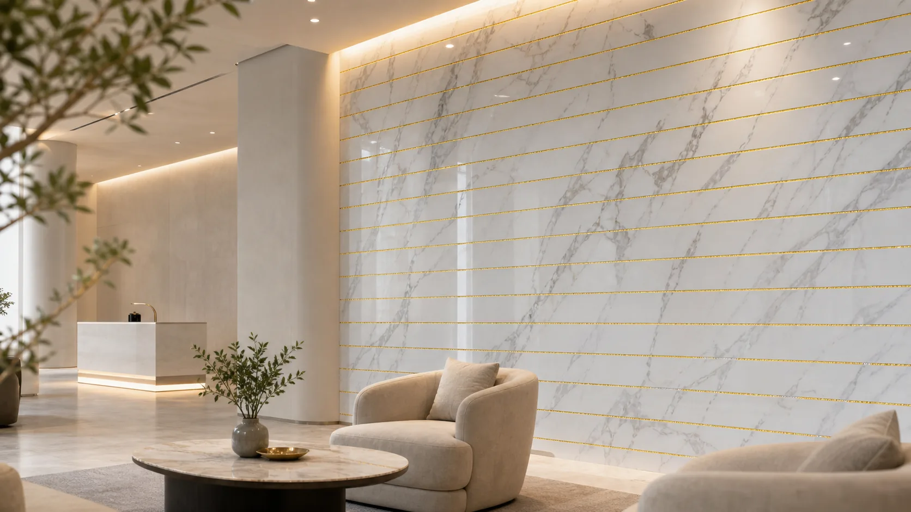
How do you fix a damaged PVC wall panel?
Compare cleaning, local repair and panel replacement for scratched or cracked PVC wall panels without hiding substrate or moisture problems.
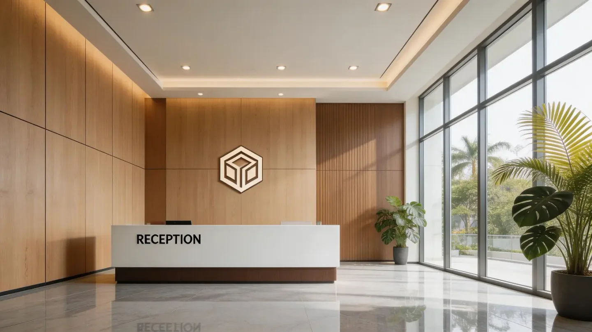
How long do PVC wall panels last?
Understand why PVC wall panel service life depends on the exact product, exposure, installation and maintenance rather than a universal number of years.
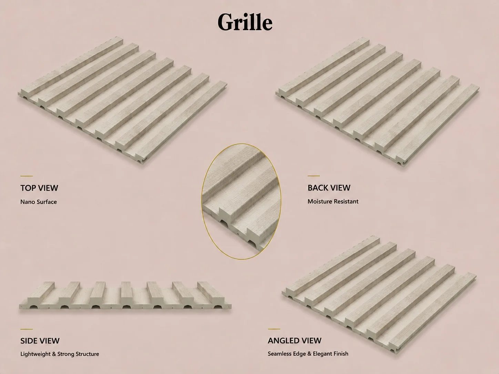
Can PVC wall panels be installed on plywood?
Before installing PVC wall panels on plywood, review board condition, moisture, flatness, fixings, fire scope and manufacturer compatibility.
Are WPC wall panels waterproof?
Separate WPC wall panel face performance from water entry at joints, substrate and installation details when planning bathrooms or humid interiors.
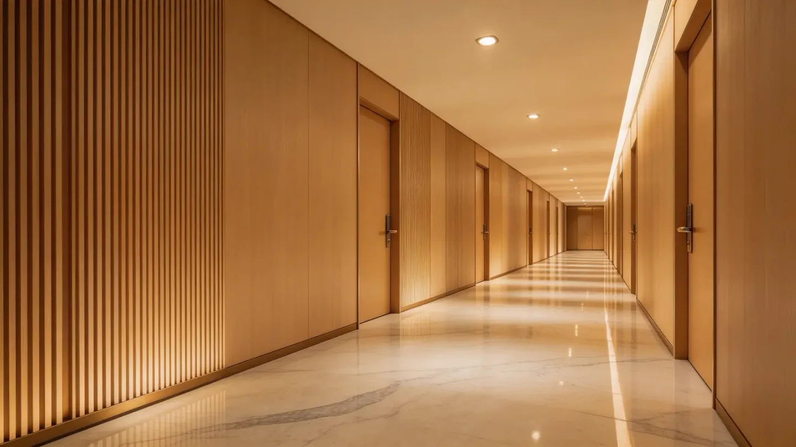
Are WPC wall panels soundproof?
Learn why decorative WPC wall panels are not automatically soundproof and how to compare sound absorption, sound insulation and tested mounting details.
Are WPC wall panels fireproof?
Check WPC wall panel fire claims against exact-SKU test reports, mounting, classification and destination-market requirements before a commercial order.
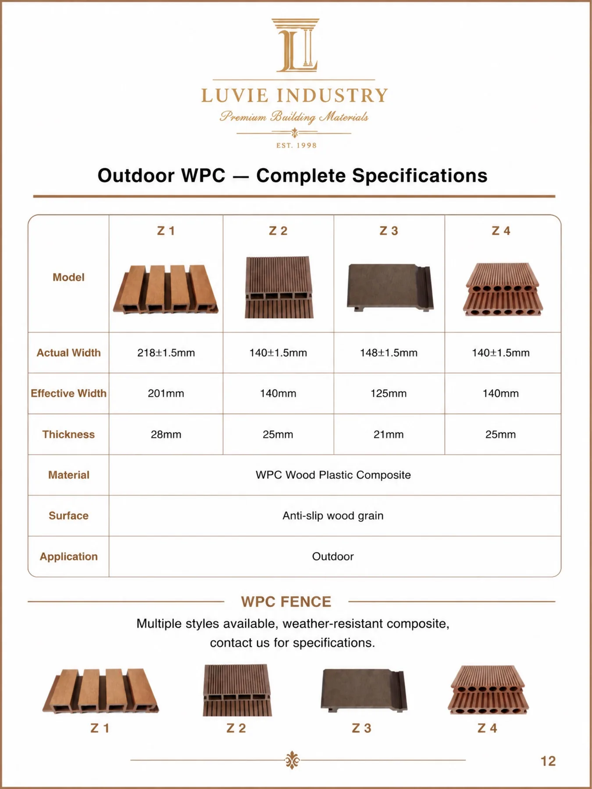
Can you paint WPC wall panels?
Check whether a WPC wall panel face can accept paint, including coating adhesion, cleaning, exterior exposure and warranty implications.
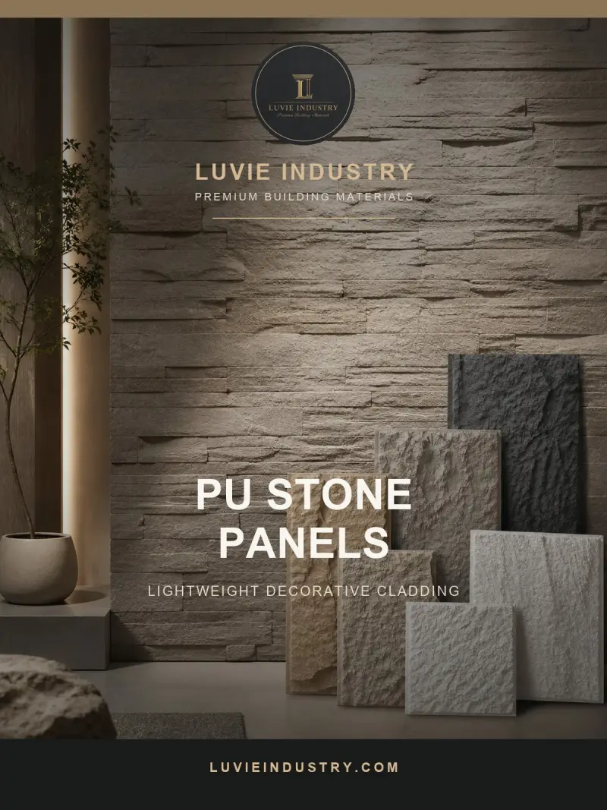
Are PU stone wall panels waterproof?
Assess PU stone wall panels for rain, splash and humid interiors by checking face, joints, backing, fixing and destination-specific evidence.
Are UV marble sheets waterproof?
Understand what a UV marble sheet can and cannot do in wet spaces, including face finish, joints, backing board and substrate waterproofing.
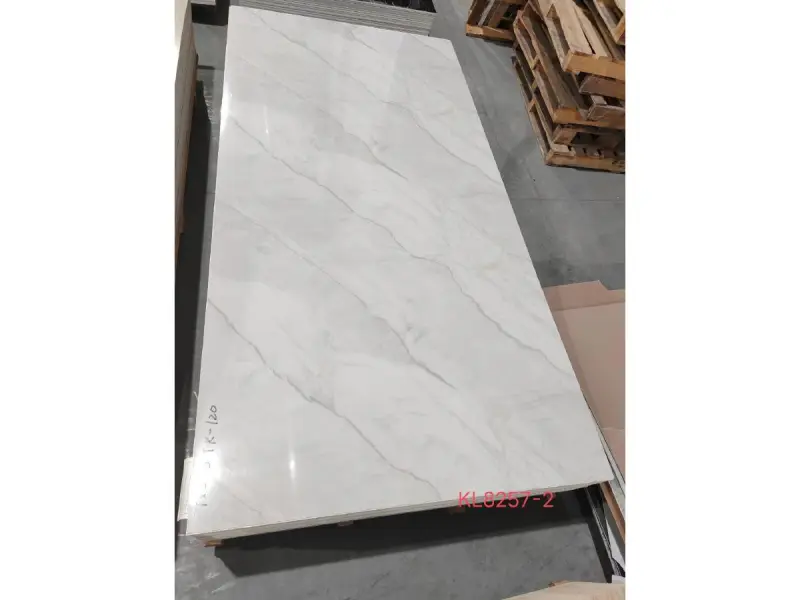
Are UV marble sheets heat resistant?
Before specifying UV marble sheets near a cooker or hot lighting, check substrate, coating, temperature limits, fire evidence and appliance clearances.
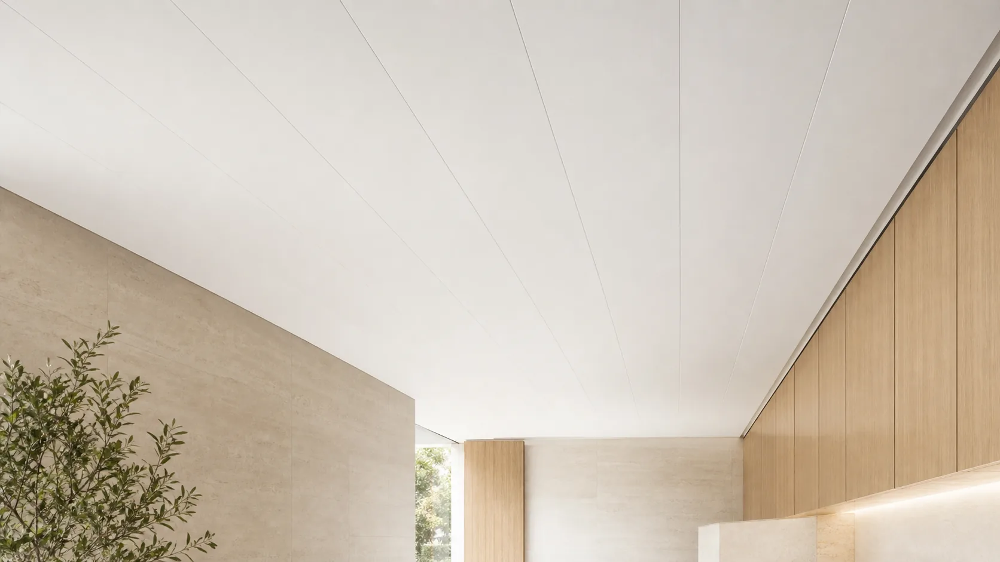
Which trim size fits a 5 mm, 8 mm or 10 mm wall panel?
Choose a wall panel trim by measured panel thickness, profile geometry, corner type and finish rather than buying a nominal 5, 8 or 10 mm label alone.
How do you prevent condensation damage in a wall panel container?
Reduce wall panel shipment moisture risk through dry cargo, packaging, ventilation decisions, loading photos and arrival inspection.
Should a wall panel importer use DAP or DDP?
Compare DAP and DDP for imported wall panels by import clearance, duties, delivery point, unloading and documentation responsibilities.
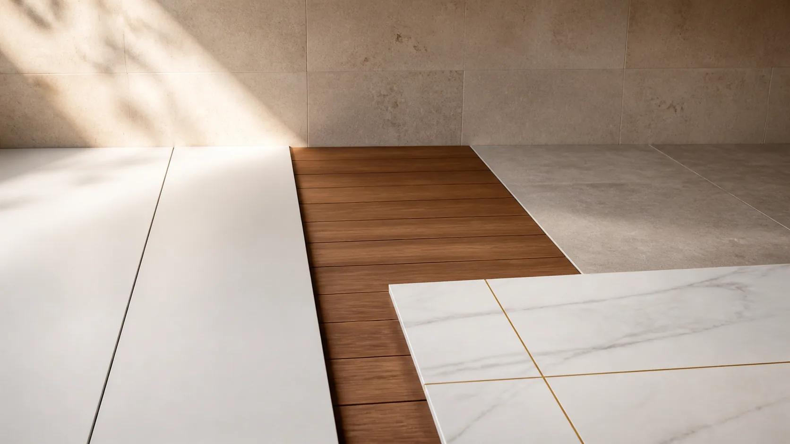
What is a golden sample for a wall panel order?
Create a traceable golden-sample approval for wall panels covering profile, finish, color, packaging, documents and later batch inspection.
PVC Ceiling Installation in Brazil: Support and Expansion Checks
Planning forro de PVC for Brazil? Check support spacing, expansion gaps, heat, trims and the exact manufacturer instructions before approving panels.
PVC Wall Panels in Direct Sun: Hot-Climate Buyer Checks
Can decorative PVC wall panels face strong sun? Check indoor versus outdoor use, heat, expansion, UV evidence, glazing and the exact SKU before ordering.
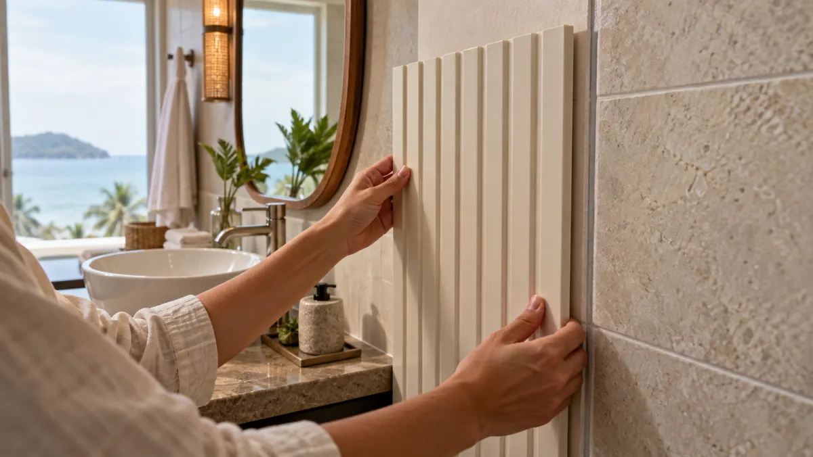
PVC Wall Panels for Coastal Humid Interiors
For coastal hotels and renovations, check wall moisture, seams, substrate, fixings and cleaning before choosing decorative PVC wall panels.
Gulf Hotel Wall Panels: Fire Evidence Checklist
A Gulf hotel wall-panel buyer checklist for matching the exact SKU, intended room, fire test report, installation and authority requirements.
Import PVC Wall Panels to Uzbekistan: 2026 Buyer Checklist
Buying PVC wall panels for Uzbekistan? Confirm product code, local conformity route, language, documents, cartons and shipment terms before the deposit.
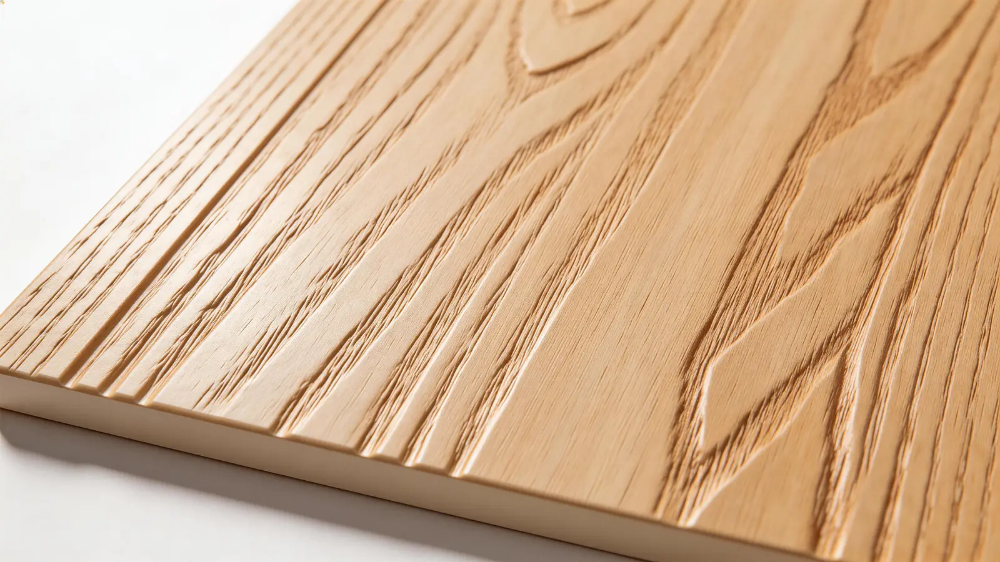
Can PVC Wall Panels Go on Plasterboard?
Check drywall condition, moisture, fixing method, joints and load before fitting PVC wall panels over plasterboard. A practical buyer and installer guide.
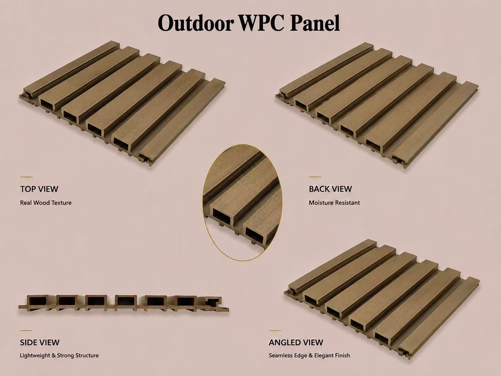
Can Indoor WPC Wall Panels Be Used Outside?
Indoor WPC wall panels are not automatically exterior cladding. Compare UV, moisture, expansion, drainage and fixings before selecting a product for outdoor use.
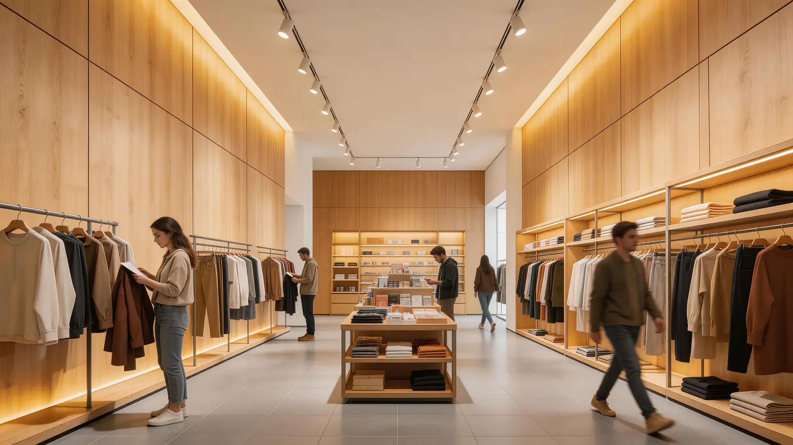
Fluted Wall Panels for Retail Stores: Buyer Checklist
Plan a fluted wall panel package for a retail store with practical checks on wear, cleaning, corners, fire evidence, replaceability and repeat-order consistency.
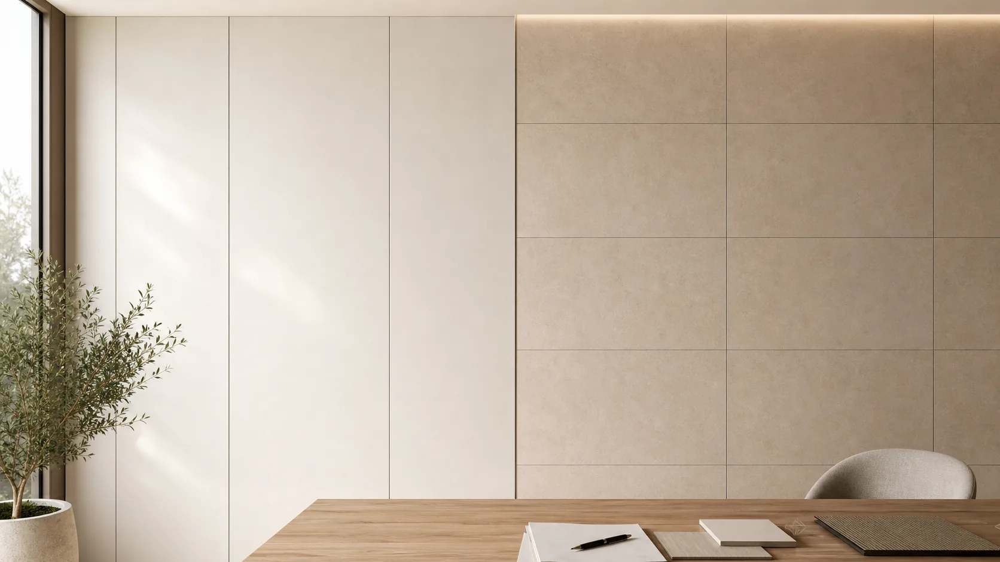
Can You Install PVC Wall Panels Over Existing Tile?
Assess existing tile, moisture, bond, joints and wall depth before installing PVC wall panels over tile. A practical renovation checklist for buyers and installers.
How to Clean PVC and WPC Wall Panels
Create a wall panel cleaning and maintenance plan for PVC, WPC and decorative finishes, with spot tests, joint checks and clear customer instructions.
Wall Panel Fire Rating: How to Check a Test Report
Learn how importers check wall panel fire test reports: product identity, tested assembly, method, classification, validity and local project requirements.

Low VOC Wall Panels: What Evidence to Request
Compare low VOC wall panel claims using product-specific chamber tests, adhesives, finishes and intended indoor use. A document checklist for B2B buyers.
Wall Panel Landed Cost per Square Metre
Estimate landed cost per square metre for imported wall panels using effective coverage, cartons, freight, duties, taxes, damage allowance and accessories.
UV Marble Sheet Buyer Guide: Structure, Finish and Samples
Learn what UV marble sheets are made of and compare substrate, surface, gloss, dimensions, edges, installation and samples before a bulk order.
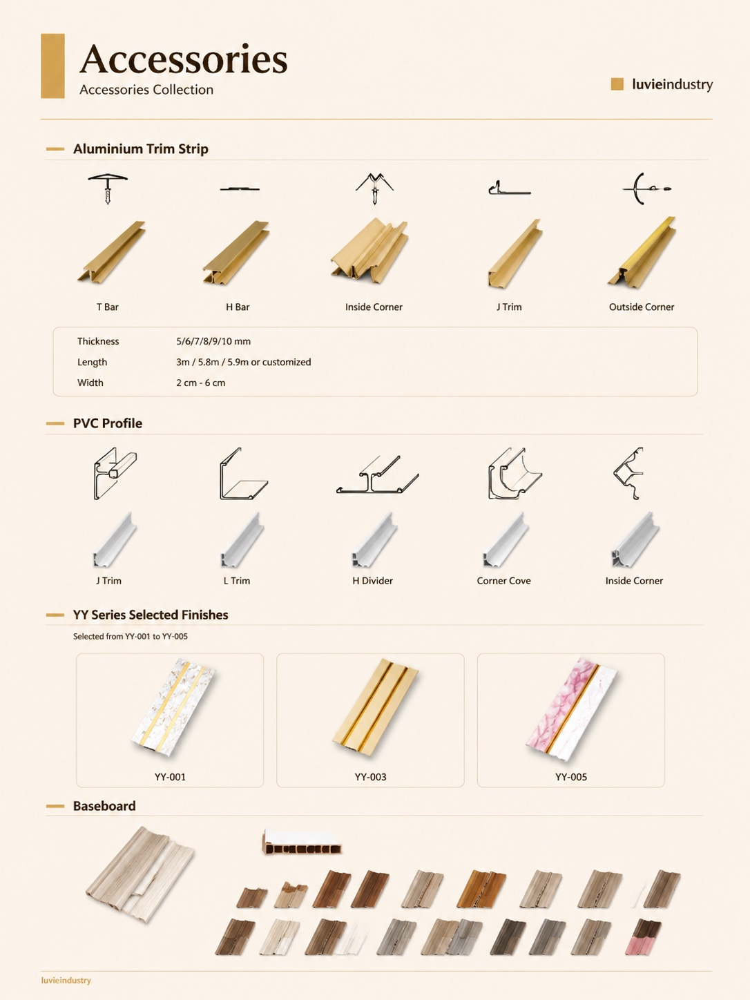
Wall Panel Trims and Accessories: Complete Buyer Guide
Plan wall panel trims and accessories for starts, ends, joints, inside corners, outside corners, transitions, fixing and lighting before ordering.
2026 Wall Panel Trends: What Distributors Should Sample
Translate 2026 wall panel trends into a controlled distributor test plan for warm finishes, wider profiles, room packages, samples and measurable demand.
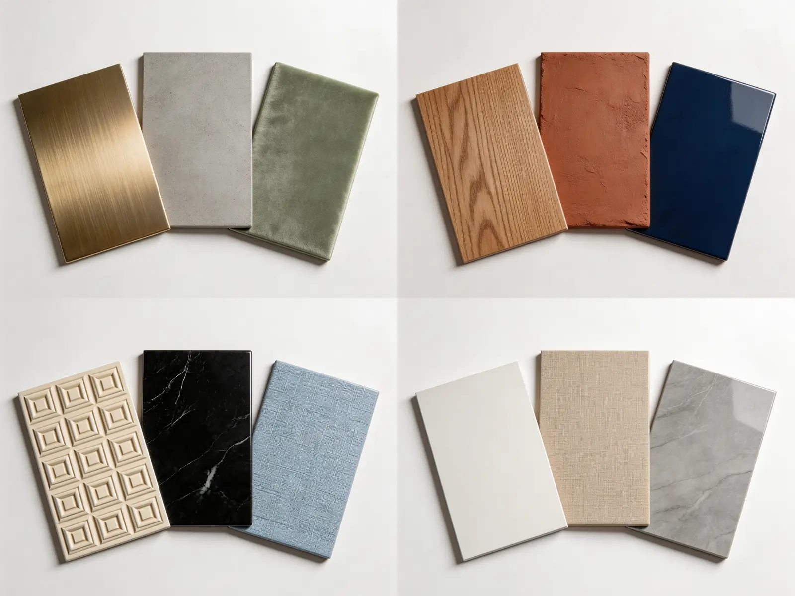
Wall Panel Showroom Display Guide for Distributors
Plan a wall panel showroom display with representative samples, clear labels, lighting checks, accessories and a sample-to-quote path for distributors.
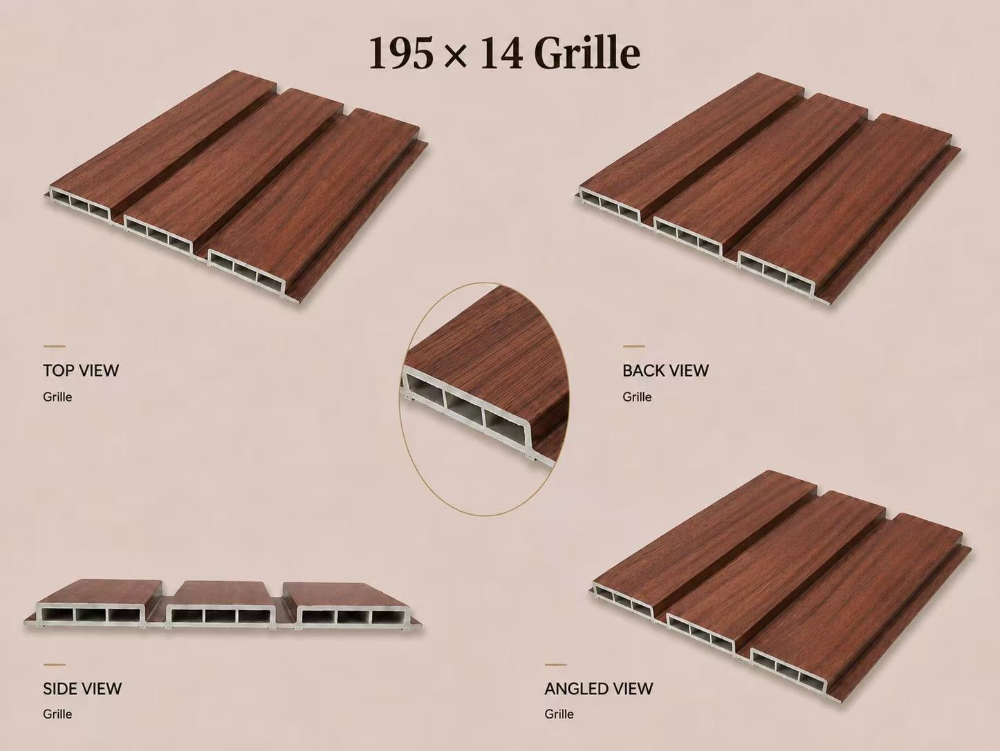
WPC Wall Panel Dimensions and Coverage Calculator
Calculate WPC wall panel coverage using effective width, panel length, wall dimensions, openings, layout direction, cutting allowance and packing units.

Import Wall Panels from China: Document and Cost Checklist
Prepare a wall panel import with a checklist for specification, commercial invoice, packing list, transport document, Incoterms, HS review and landed cost.
How Distributors Build a Sellable Interior Finish Range
A distributor planning guide: assign PVC panels, SPC flooring and decorative panels distinct selling roles before building an interior-finish range.
PVC Ceiling Panel Supplier Checklist for a First Order
Use this PVC ceiling panel supplier checklist to verify samples, SKU details, trims, packing, market documents and shipment evidence before a first order.
Are PVC Wall Panels Waterproof in Bathrooms?
Understand the product, joint, substrate and installation questions that matter in humid applications.
PVC Wall Panels vs Ceramic Tile for Importers
A B2B comparison for distributors: compare PVC wall panels and ceramic tile by installed scope, stocking, samples and project boundary.
SPC Flooring Specifications: Distributor Buyer Guide
A B2B specification guide for distributors comparing SPC flooring core, wear layer, IXPE, lock, plank format and packing before approving a SKU.
Gold-Grooved Self-Adhesive Wall Panels: Buyer Guide
Identify the product, review the physical finish, check the substrate and define the application boundary before sale.
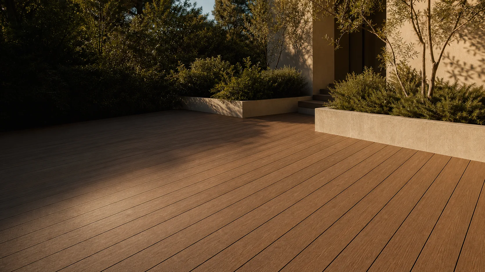
Outdoor WPC Decking: Importer Profile and System Checklist
Compare effective coverage, board profiles, accessories, installation boundaries and export packing before price.
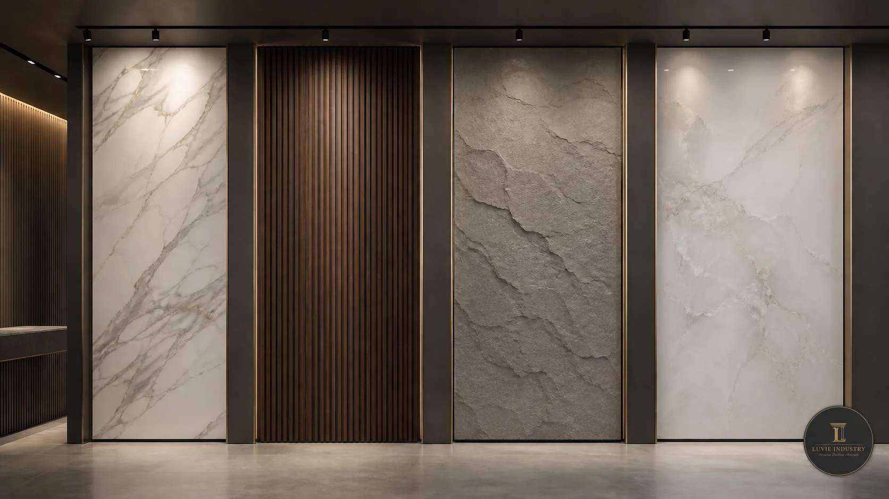
Are Wall Panels Waterproof? 15 Straight Answers for Buyers
Direct, professional answers about waterproofing, bathrooms, tiles, outdoor use, WPC disadvantages, PU stone, UV boards and ordering.
Wall Panel Standards: What Independent Evidence Actually Proves
Use institutional sources to assess moisture, weathering, fire, VOCs, color, inspection, packing and trade terms.
Hotel Corridor Wall Panels: Fluted Panel Project Guide
Plan feature zones, finishes, trims, lighting, batches and replacement stock for a hotel corridor package.
Bedroom Feature Wall Panels: Layout and Ordering Guide
Coordinate wall-panel composition with the bed, lighting, sockets, trims, samples and packing.
Office Lobby Wall Panels: Design and Project Buyer Guide
Coordinate the focal wall, company signage, durability, project lighting and area-based packing.
Can PVC Ceiling Panels Be Used on Walls? Buyer Guide
Compare applications, profiles, support systems, finishes, accessories and order specifications.
How Many Wall Panels Do I Need? Order Calculation Guide
Calculate coverage using wall dimensions, net panel width, cutting layout, project allowance and packing units.
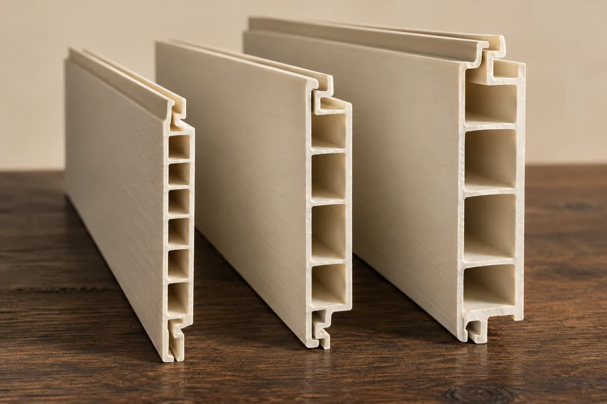
PVC Wall Panel Thickness and Profiles: What to Check
Compare dimensions, profile construction, joints, surfaces, accessories and packing for your market or project.
How to Prevent Wall Panel Color Differences Between Batches
Build color standards, approved samples and batch records into repeat wall panel orders.
Wall Panel Order Process: From Inquiry to Shipment
See how product confirmation, samples, contracts, production inspection and shipping fit together.
Best Wall Panel Mix for Hotels, Retail and Homes
Match wall panels, floors and accessories to hotel, retail and residential project requirements.
Wall Panel Packaging Checklist for Overseas Buyers
Check cartons, labels, protection, quantities, loading records and shipping marks before dispatch.
OEM Wall Panels: Private Label Checklist Before Production
Confirm artwork, labels, cartons, samples, quantities and approval responsibilities before production.
FOB vs CIF for Wall Panel Orders: Which Is Better?
A practical comparison of cost responsibility, freight control and documents for overseas wall panel buyers.
PU Stone Panels vs Natural Stone: Which Should You Choose?
Compare weight, installation, transport and sourcing considerations before selecting a stone-look wall system.
Mixed-Container Wall Panel Orders: A Buyer Planning Guide
Learn how a coordinated product mix can reduce first-order risk and test demand across wall panel categories.
Fluted Wall Panels: Profiles, Uses and Buyer Guide
Plan profiles, finishes, accessories and market positioning for a practical fluted wall panel range.
10 Questions to Ask a Wall Panel Supplier Before Ordering
Compare suppliers using the same questions about specifications, samples, quality, packing, lead time and export support.
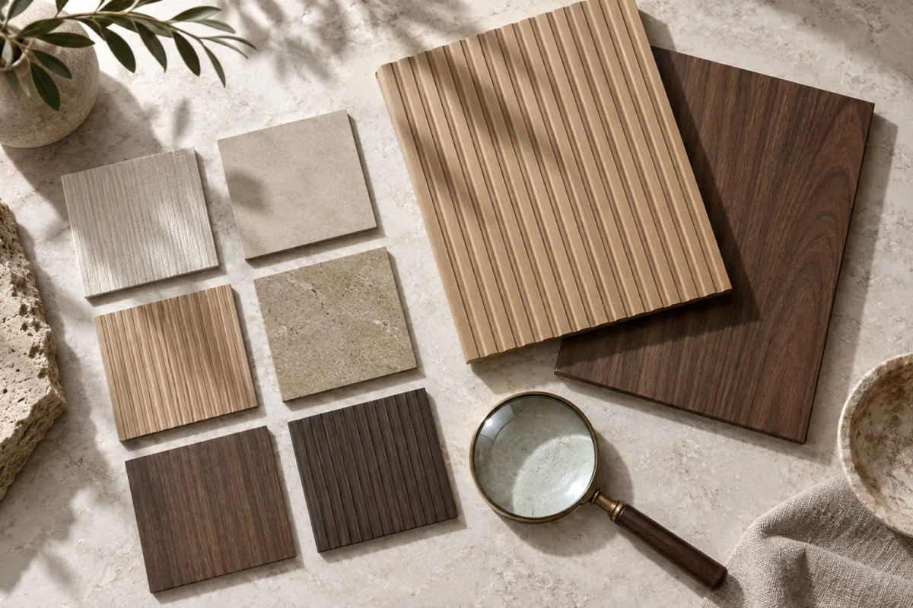
Wall Panel Sample Checklist Before Mass Production
Use a repeatable sample checklist before approving wall panel specifications, color, surface, profile and packing.
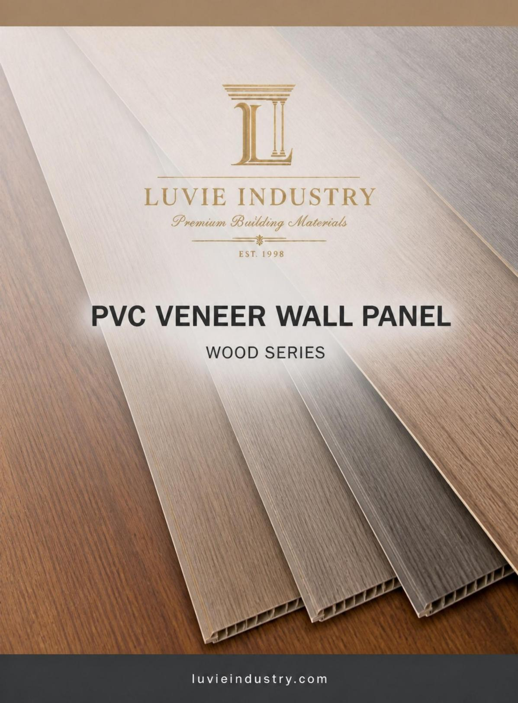
Are PVC Wall Panels Good? Uses, Limits and Buyer Checks
Understand applications, buyer checks, sample questions, and cooperation notes before sourcing PVC wall panels.
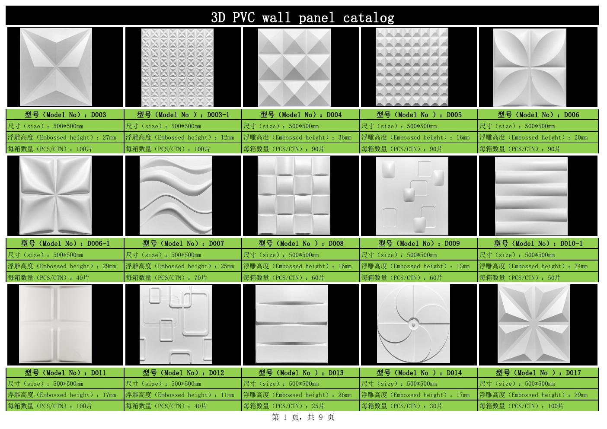
PVC vs WPC Wall Panels: Which Is Better for Your Market?
A practical comparison for distributors choosing the right wall panel line for retail, wholesale, or project use.
How to Check Wall Panel Quality Before a Bulk Order
Key checks for color consistency, surface finish, dimensions, packing, samples, and pre-shipment communication.
PVC Wall Panels for Importers
Compare profiles, connected coverage, finishes and matching trims; open the PVC catalog and request the current SKU specification.
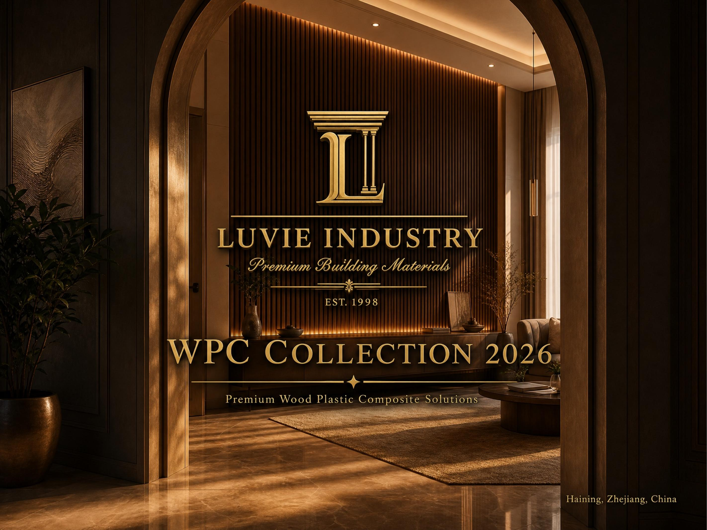
WPC Wall Panels for Importers
Separate indoor decorative use from outdoor-exposure systems, then compare profiles, effective coverage and installation conditions.
Fluted Wall Panels for Importers
Compare PVC and WPC profile geometry, fixing, corners and the joined physical sample.
PU Stone Panels for Importers
Compare texture, exposure, fixing and packing before requesting an exact model and sample.
UV Marble Sheets for Importers
Review board construction, finish, joints and installation conditions alongside the catalog.
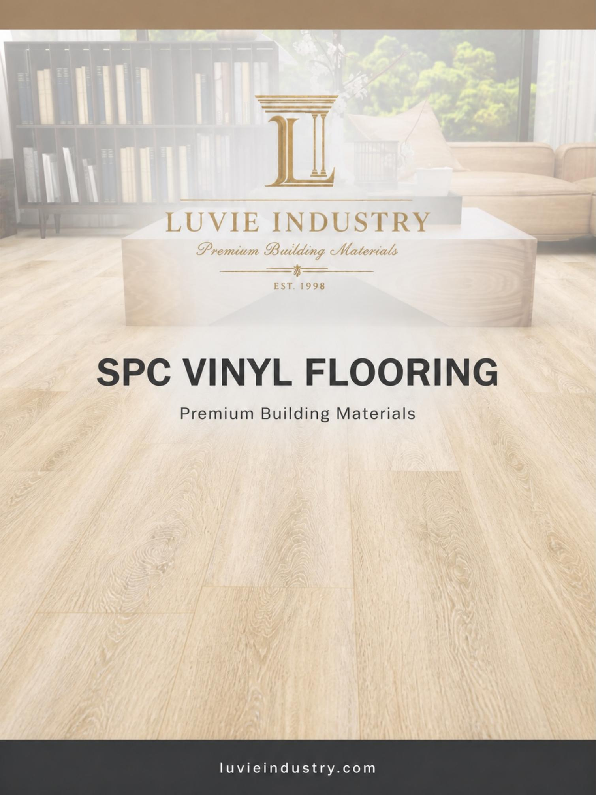
SPC Flooring for Distributors
Check the wear layer, click profile, underlay and carton coverage before comparing offers.
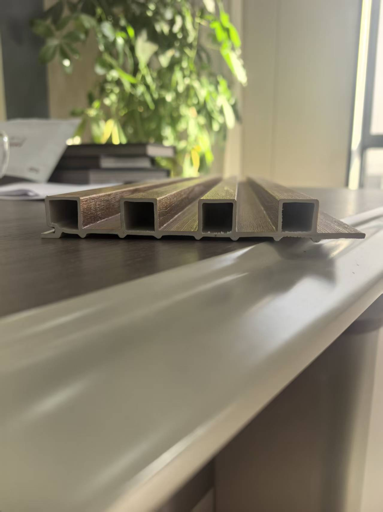
Painel ripado de PVC para parede: como escolher
Compare material, cobertura útil, ambiente de instalação e acessórios antes de solicitar uma cotação.